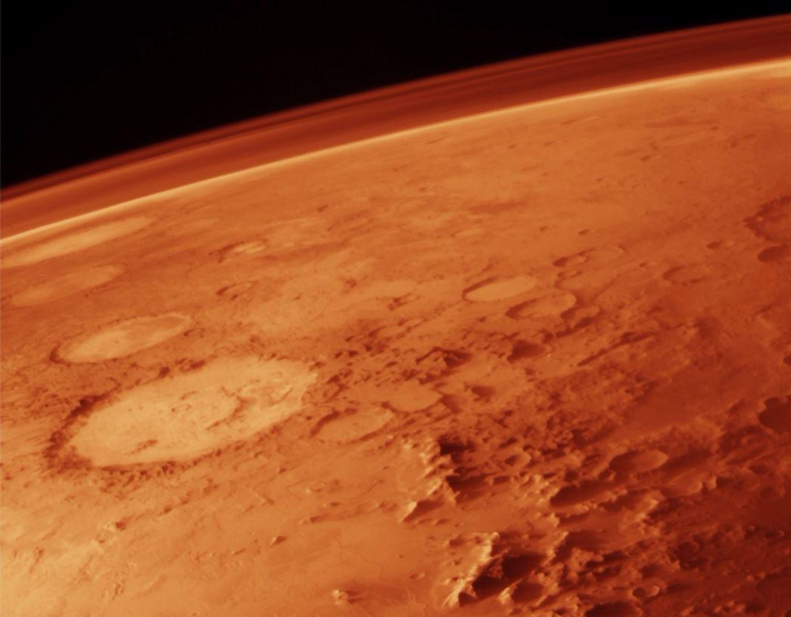
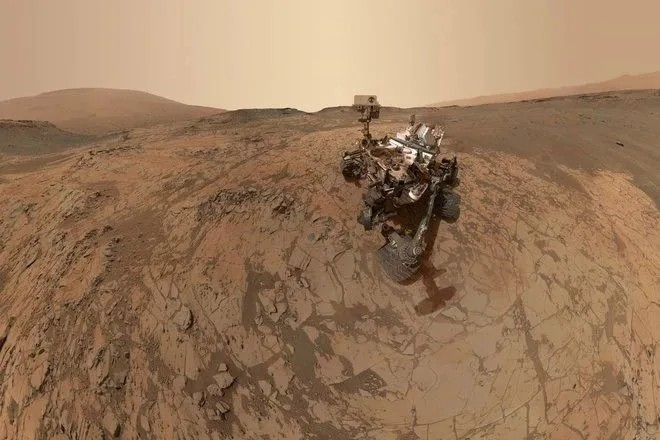
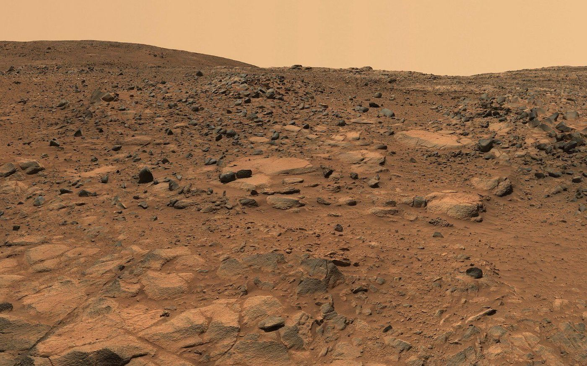

Mars at a glance
Small, cold, and a long way out.
The fourth planet from the Sun is a desert world with seasons, weather, volcanoes and the remains of ancient water.
Try it
How old are you on Mars?
A Mars year lasts 686.98 Earth days, so you are younger there. Gravity is also lower, so you would weigh much less. The values below are examples; change them.
Orbits
One Mars year, nearly two Earth years.
Mars travels slower and has a longer path. While it makes one lap around the Sun, Earth makes almost two. Its orbit is also stretched: 206.7 million km from the Sun at the closest point, 249.3 million km at the farthest, so seasons on Mars last about twice as long as ours.
Orbits are drawn as circles to keep the picture simple. One second shows 60 days.
Atmosphere
Air you cannot breathe.
The Martian atmosphere is almost pure carbon dioxide. Surface pressure averages about 6.4 millibars, less than one hundredth of Earth's, which is about 1,013 millibars.
Dust storms can grow big enough to wrap the planet for weeks. Fine dust scattered in the thin air gives the daytime sky a butterscotch tint, while sunsets look blue.
Only 0.16% of the air is oxygen. On Earth it is nearly 21%.
Mars: CO₂ 95.1% · N₂ 2.59% · Ar 1.94% · O₂ 0.16% · CO 0.06%

Temperature
Colder than any place you have lived.
Thin air holds almost no heat. A summer afternoon near the equator can feel mild, then the same spot drops far below freezing after sunset.
Mars: winter pole to summer day (ESA). Earth: record lowest and highest air temperatures.
Could people live there?
Not yet, and not without a lot of help.
Mars is the most Earth-like place we can reach, which is a low bar. Every basic need would have to be built or brought along.
- Air
- Almost no oxygen. The MOXIE experiment on NASA's Perseverance rover split oxygen out of Martian carbon dioxide and hit its target rate of 6 grams an hour, about what a modest tree produces.
- Pressure
- At around 6 mbar, far below the Armstrong limit where body fluids begin to boil. Anyone outside needs a full pressure suit.
- Radiation
- Mars lost its global magnetic field and has a thin atmosphere, so the ground gets more radiation than Earth's. Habitats would need shielding, such as buried walls, water, or lava tubes.
- Soil
- Martian dust contains perchlorates, salts that are toxic to people and would need to be removed before farming.
- Water
- Plenty of ice sits at the poles and under the surface at middle latitudes. Melting and cleaning it is the easier part.
- Distance
- A trip takes about seven months. Radio messages need 3 to 22 minutes each way, so there is no live conversation with home.
- Gravity
- At 38% of Earth's, bones and muscles would likely weaken. Nobody knows yet how people cope with that over years.
Landforms
Mountains and canyons on a giant scale.
Height
Olympus Mons is the tallest known volcano in the Solar System, about 22 km above its surroundings.
Length
Valles Marineris runs roughly 4,000 km and reaches about 7 km deep, around ten times longer and several times deeper than the Grand Canyon.
Moons
Two lumpy rocks.
Phobos is about 27 × 22 × 18 km. It circles Mars in about 7 hours 39 minutes, faster than Mars spins, so from the surface it rises in the west. It is slowly spiralling inward and is expected to break apart or crash in tens of millions of years.
Deimos is smaller, about 15 × 12 × 11 km, and orbits farther out. From Mars it looks like a bright star, not a disc. Both moons are dark and cratered, and they may be captured asteroids.
Exploration
Six decades of visitors.

- 1965Mariner 4 flies past and sends the first close-up photos of another planet's surface.
- 1976Viking 1 and 2 land and run experiments searching for signs of life.
- 1997Pathfinder lands with Sojourner, the first rover on Mars.
- 2004Spirit and Opportunity find evidence that liquid water once shaped the ground.
- 2012Curiosity lands in Gale crater and finds an ancient lake environment.
- 2021Perseverance lands in Jezero crater. Its helicopter Ingenuity makes the first powered, controlled flight on another world. China's Zhurong rover arrives the same year.
Explorerکاوش سیاره
Pick a place on Mars.یک نقطه از مریخ را انتخاب کن.
Tap a pin to read about that region. Where a real photo exists, you can zoom into it.روی یک سنجاق بزن تا دربارهی آن ناحیه بخوانی. اگر عکس واقعی آن ناحیه داشته باشیم، میتوانی به آن نزدیک شوی.
The map is a real surface texture of Mars. Pin positions are approximate. In the 3D globe, drag to rotate and scroll to zoom.این نقشه بافت واقعی سطح مریخ است. موقعیت سنجاقها تقریبی است. در کرهی سهبعدی با کشیدن بچرخان و با اسکرول نزدیک یا دور شو.
Environment simulatorشبیهساز محیط
Dust and light change the surface.غبار و نور، سطح را عوض میکنند.
Move the dust slider and pick a time of day. The photo of the surface changes to match.کشوی غبار را تکان بده و یکی از ساعتهای روز را انتخاب کن. عکس سطح با آن هماهنگ میشود.

Visual simulation only. It shows how the surface looks under different conditions, not measured physical values.این فقط شبیهسازی تصویری است و نشان میدهد سطح در شرایط مختلف چه ظاهری دارد، نه مقادیر فیزیکی اندازهگیریشده.
Mission Controlمرکز کنترل ماموریت
Missions, data and images.ماموریتها، داده و تصویر.
Real facts, real charts and simulated values are labelled differently, so you always know which is which.حقایق واقعی، نمودارهای واقعی و مقادیر شبیهسازیشده با برچسبهای متفاوت مشخص شدهاند تا همیشه بدانی کدام است.